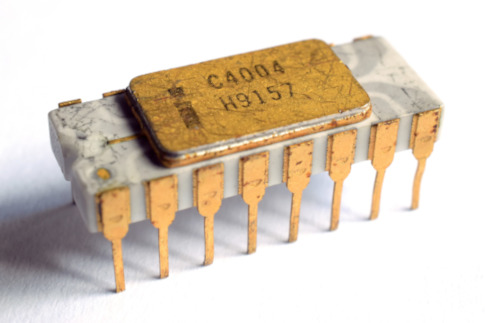
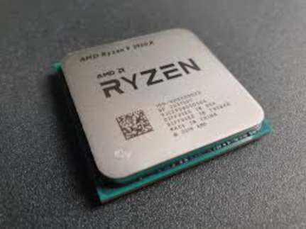

The first computers did not have a single CPU chip — instead, they used entire rooms full of vacuum tubes
and transistors to perform calculations. In 1971, Intel released the 4004, the world's first commercial
microprocessor. It had just 2,300 transistors and ran at 740 kHz — unimaginably slow by today's standards,
but a revolutionary achievement at the time.
Through the 1970s and 1980s, processors became smaller and faster rapidly. The Intel 8086 (1978) gave birth
to the x86 architecture that most modern CPUs still use today. By the late 1980s, processors like the
Intel 486 were powerful enough to run graphical operating systems, changing personal computing forever.
1990s – Present: The Modern Era
The 1990s brought the "MHz wars" — Intel and AMD competed fiercely to push clock speeds higher.
The Pentium line dominated the decade. By 2000, Intel's Pentium 4 reached 1 GHz, a milestone that
seemed impossible just years before.
In the mid-2000s, the industry hit a wall — simply increasing clock speed caused too much heat.
The solution was multi-core processors: instead of one fast core, put two, four, or more cores on one chip.
AMD disrupted the market in 2017 with its Ryzen architecture, forcing Intel to dramatically improve
its own lineup. Today, consumer CPUs routinely feature 8 to 24 cores and billions of transistors,
built on manufacturing processes as small as 3–4 nanometers.

Intel 4004 — the world's first microprocessor (1971)

A modern AMD CPU. Photo: Pauli Rautakorpi / CC BY 3.0
Modern CPU Specifications
When buying or comparing CPUs, you will encounter several key specifications.
Understanding them helps you choose the right processor for your needs.
AMD — Advanced Micro Devices
AMD's current consumer lineup is based on the Zen architecture (currently Zen 5).
AMD CPUs are known for offering more cores at lower prices compared to Intel.
Their Ryzen 5, Ryzen 7, and Ryzen 9 series cover budget, mid-range, and high-end needs respectively.
Key AMD specs to know: core count, thread count, base and boost clock speed (GHz),
TDP (thermal design power in watts), and the socket type (currently AM5).
AMD CPUs also feature integrated graphics on some models (the "G" suffix, e.g. Ryzen 7 8700G).
Intel
Intel's current lineup uses a hybrid architecture combining Performance cores (P-cores)
and Efficient cores (E-cores). P-cores handle demanding tasks, E-cores handle background work —
similar to how smartphones manage power. Their lineup goes from Core i3 (budget) to Core i9 (enthusiast).
Key Intel specs: P-core and E-core counts, boost clock speed, TDP, and socket type (currently LGA1851
for the latest generation). Intel CPUs traditionally lead in single-core performance,
which matters for gaming.
Others: Apple, Qualcomm, ARM
Not all computers use x86 CPUs. Apple's M-series chips (M1, M2, M3, M4) use ARM architecture
and are known for exceptional performance per watt — meaning they are fast while using very little power.
Qualcomm's Snapdragon X series brings ARM to Windows laptops.
These chips are becoming increasingly competitive with traditional x86 processors.
Top CPUs Today
Below is a comparison of the most popular high-end consumer CPUs currently on the market.
Prices and rankings shift frequently, but these represent the top tier as of 2025.